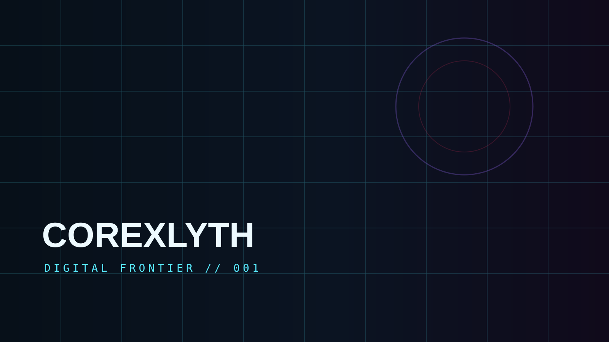
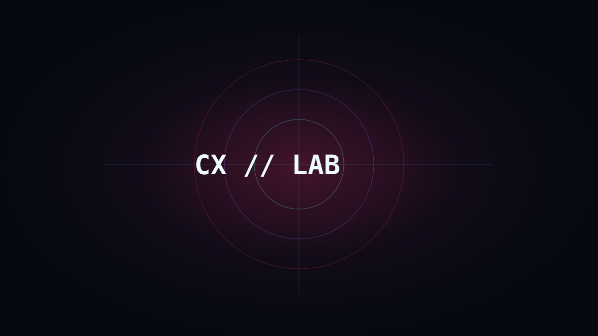

TARİH
02 YAYIN // AUTO“Tarih” etiketiyle eşleşen son içerikler.
ADAPTİF KANAL
1839 — Tanzimat Fermanı: Osmanlı Neden Kendini Değiştirmek Zorunda...
1839 yazında Osmanlı Devleti'nin önünde sakin sakin reform hazırlayabileceği bir masa yoktu...

Bir Cumhuriyet Nasıl Kurulur? Türkiye Cumhuriyeti'nin İlk Yılları
Takvimde bir tarih yazmak kolaydı; asıl mesele yeni bir devlet düzeni kurmaktı...